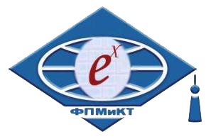

Здравствуйте!
Меня зовут Смирнов Виктор. Этот сайт сделан в рамках учебного задания по интернет-технологиям. Почему выбрал именно эту тему ? Все очень просто - я с самого детства восхищался красотой звездного неба и тайнами, которые таит в себе Вселенная. Небольшие полуавтономные космические аппараты - это, сейчас, единственное, что может помочь людям разгадать загадки космоса и природы в целом.
На момент написания сайта я учусь на 3 курсе Прикладной Математики, Компьютерных Технологий и Физики Педагогического Института ВоГУ. Являюсь старостой группы. Со школы занимаюсь спортивным плаванием и, на данный момент, "доплыл" до КМС. Люблю тратить свободное от учебы время на занятия спортом, активный отдых, изучение чего-то нового в технологической сфере, чтение книг по психологии, хорошую музыку и на общение со своими друзьями.
Вы можете связаться со мной следующими способами:
email: smirvicalex@yandex.ru.
